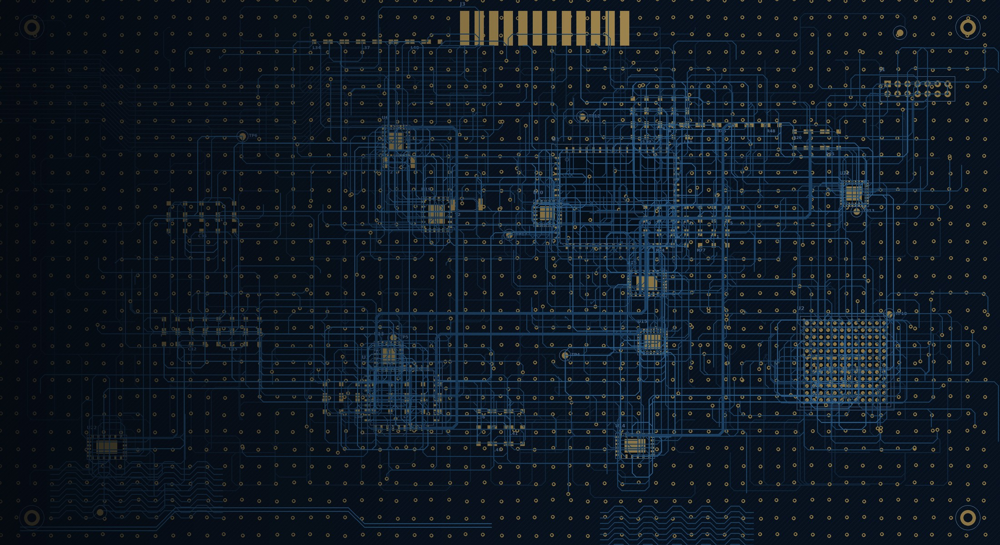
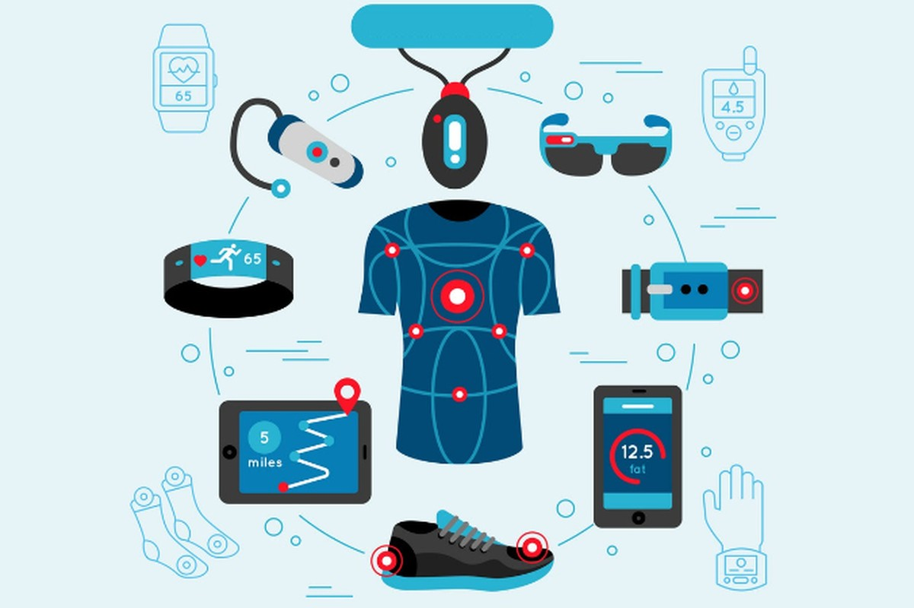
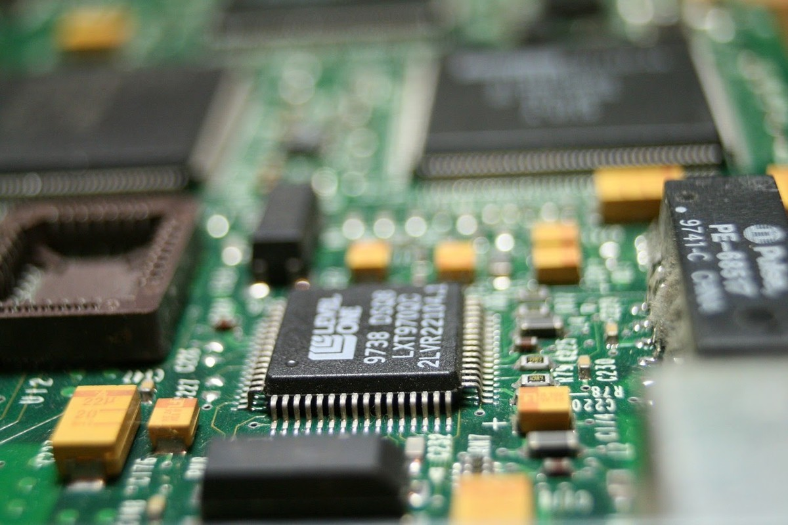
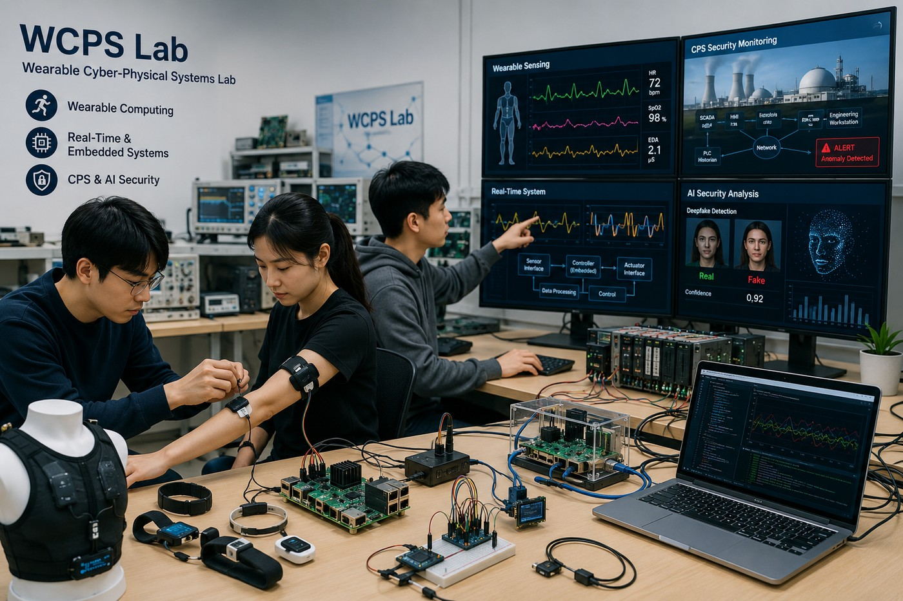
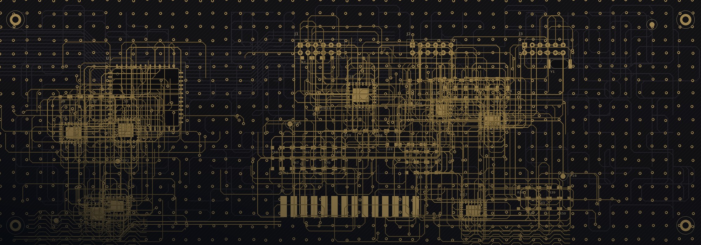

Wearable Cyber-Physical Systems Lab
We explore the convergence of wearable computing, real-time and embedded systems, and CPS and AI security — developing intelligent, dependable, and secure systems for healthcare, critical infrastructure, and connected environments.
Research areas
Three intersecting directions that drive the lab's work.

Wearable Computing
Wearable sensing and human activity recognition for healthcare, rehabilitation, and personalized monitoring.

Real-Time & Embedded Systems
Real-time processing, intelligent sensing, and hardware–software integration for reliable embedded and edge systems.
CPS & AI Security
Security and trust for critical infrastructure, embedded systems, supply chains, and AI-generated content.

Intelligent, connected, and secure systems
Our research integrates wearable computing, real-time and embedded systems, and CPS and AI security to develop intelligent and trustworthy technologies for healthcare, critical infrastructure, and connected environments.
The lab publishes its research in journals and conferences and develops patents and software across wearable healthcare, embedded systems, cybersecurity, and artificial intelligence.

Join the lab
Students interested in lab internships are encouraged to get in touch. We welcome inquiries from prospective students and collaborators.